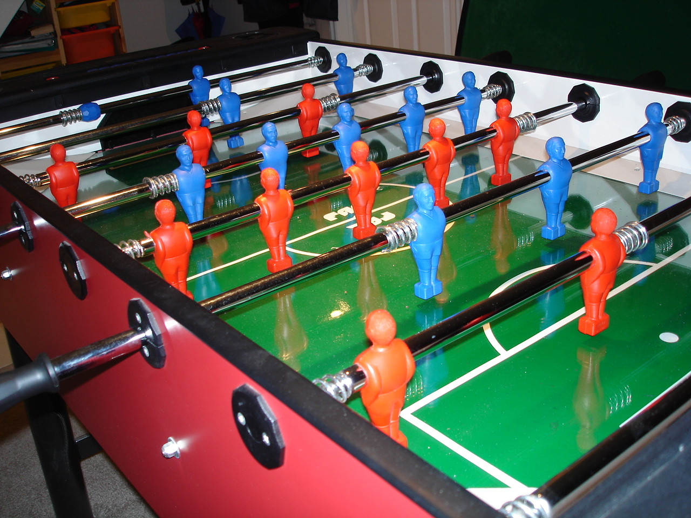

實習任務二
學習要點
此任務將逐一導入 http://www.coppeliarobotics.com/helpFiles/en/tutorials.htm 中的導引內容.
首先上場的是:
http://www.coppeliarobotics.com/helpFiles/en/bubbleRobTutorial.htm
各學員執行任務
各學員完成上述 Tutorial 後, 請將個人心得放入個人的課程網頁中.
分組專題
請各組利用 OnShape 或其他 MCAD (Mechanical Computer Aided Design) 套件, 以協同模式建立手足球系統, 並將零組件輸入 V-rep, 以建立可以兩兩競賽用的動態系統.
技術需求:
- 建立系統所需的 3D 零組件 (利用 Onshape 或其他 MCAD 套件完成)
- 將零組件轉入 V-rep (轉入後是否需要簡化,? 如何簡化? 如何設定模擬參數?)
- 分辨運動 (Kinematics) 模擬與動力 (Dynamics) 模擬的差異.
- 如何設定各操縱桿的平移軸 (Prismatic Joint) 運動?
- 如何設定各操縱桿的旋轉軸 (Revolute Joint) 運動?
- 如何設定各人偶與足球之間的碰撞動力擊球模擬?
- 如何利用鍵盤中的字母鍵控制操縱桿的平移軸與旋轉軸
- 如何利用程式 (Lua 或 Python) 控制操縱桿的平移軸與旋轉軸
- 如何感測足球通過球門?
- 如何利用 Qt 表單紀錄雙方得分?
- 人偶擊球受力時的應用分析, 可採用 Range3 進行分析.


足球員尺寸:

參考: https://www.thingiverse.com/thing:1090 and https://www.thingiverse.com/thing:2563055
足球尺寸: 36mm diameter; weighs 17 grams
材料: ABS Plastic
參考影片
The Design of a Semi-Automated Football Table.pdf
Automated Football Table Thesis.pdf
https://github.com/FoosAI/FoosAI
Design of a RoboCup Shooting Mechanism report.pdf
Design of a Ball Handling Mechanism for RoboCup report.pdf
參考資料
2009_Real-Time Ball Tracking in a Semi-automated Foosball Table.pdf
2015_Hambot-An Open Source Robot for RoboCup Soccer.pdf (Github)
2017_First International HARTING Open Source Prize Winner-The igus Humanoid Open Platform.pdf (Hardware, Software)
2018_Cloud Simulations for RoboCup.pdf
2018_Modelling a Solenoid Valve Movement.pdf
Holodeck: https://github.com/BYU-PCCL/holodeck
https://github.com/deepdrive/deepdrive
延伸專案
在 Windows 10 環境中, 以 MSYS2 編譯 V-rep (https://github.com/CoppeliaRobotics/v_rep).
V-rep 其他版次原始碼.7z (1.8 GB)
w1取分項目 << Previous Next >> V-rep Introduction